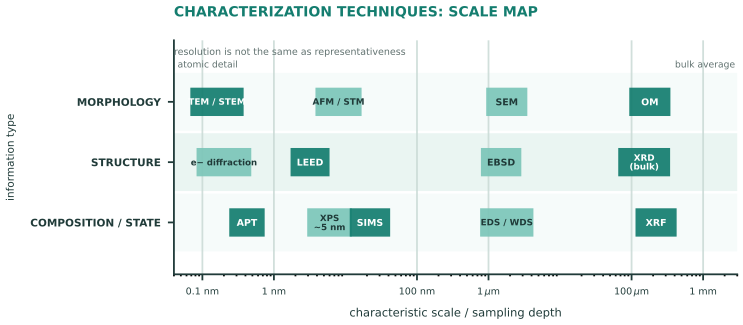

本页目录
工艺 III · 表征：材料科学家的眼睛
材料科学的每一个结论都要有"看见"的证据。表征技术的选择逻辑只有一条：你想知道什么尺度上的什么信息——形貌、结构、成分，还是化学状态？ 本页给一张选型地图与每种手段的"能看到什么、看不到什么"。
学习层：从一个 XRD 峰，哪些结论真的站得住？
1. 具体材料情境：未知粉末的一条强峰
实验室拿到一份未知粉末：Cu Kα 波长 \(\lambda=0.15406\) nm，某强峰的半高宽（FWHM）为 0.35°，仪器本身贡献 0.12°。你可以用峰位算晶面间距，用峰宽估算相干衍射域尺寸，但“这是什么相”还需要整张指纹和交叉证据。实验允许勾选 SEM 形貌与 EDS 元素组成，观察它们怎样补上证据链。
2. 必须作答的预测门：单峰能否定相？
先选：不能，需多峰与交叉证据、能，峰位足够精确就唯一、或 能，峰宽直接给物相。请把“几何反演”“尺寸估计”“物相身份”分成三个问题；揭示后才显示峰形 SVG、仪器展宽校正和 SEM/EDS 证据账本。
3. 正式公式桥：Bragg → Scherrer → 证据组合
峰位由 Bragg 定律给出：
把观测 FWHM 与仪器展宽作近似平方差校正（角度先转弧度）：
这里 \(D\) 是 Scherrer 意义下的相干衍射域尺寸，不能不加验证地等同于金相晶粒尺寸，更不是自动得到的“物相名”。物相身份要把多峰与标准卡片比对，并用 SEM 的形貌和 EDS 的元素组成做证据账本。
4. 误区与模型边界
- 单峰不能充分定相：不同相可能有重叠峰或相近峰位；“XRD 没看到”也不等于低含量相不存在。
- Scherrer 尺寸受形状因子、峰拟合、微应变、缺陷和仪器展宽影响；仪器峰宽不先扣除会把尺寸系统性算小。
- EDS 给元素组成而非唯一晶体结构，SEM 给局部形貌而非体平均相分数；SEM/EDS 是补充证据，不是把单峰变成定理的按钮。
- Bragg 与 Scherrer 都是理想化/近似桥：织构、非晶弥散峰、重叠峰、有限统计和样品制备伪像都需要更完整的谱学或显微方案。
无 JavaScript 时的静态 fallback：取 Cu Kα、\(d=0.2088\) nm、\(n=1\)。Bragg 给 \(\theta\approx21.649°\)、\(2\theta\approx43.298°\)；用 \(\beta_{obs}=0.35°\)、\(\beta_{inst}=0.12°\) 转弧度后，\(\beta_{sample}\approx0.005738\)，取 \(K=0.9\) 得 Scherrer 尺寸约 26.0 nm。证据账本仍写明：只有一个峰，不能充分定相。
| 方法/量 | 静态结果 | 能支持什么 |
|---|---|---|
| Bragg \(2\theta\) | 43.298° | 由 \(d\) 预测峰位 |
| \(\beta_{obs},\beta_{inst}\) | 0.35°, 0.12° | 观测与仪器宽度 |
| \(\beta_{sample}\) | 0.005738 rad | 平方差校正后的宽度 |
| Scherrer \(D\) | 26.0 nm | 相干衍射域估计，不直接等同晶粒尺寸 |
| XRD | 1 个峰 | 单峰不能充分定相 |
| SEM / EDS | 可加入 | 形貌 / 元素的交叉证据，仍需多峰指纹 |
1. 选型地图（先记这张表）
| 尺度 | 形貌 | 结构（原子排列） | 成分/化学态 |
|---|---|---|---|
| mm–μm | 光学显微镜 OM | — | 火花光谱、XRF |
| μm–100 nm | SEM | EBSD（取向） | EDS（元素）、WDS（精确） |
| nm–原子 | TEM/STEM | XRD（体相）、电子衍射 | EELS、原子探针 APT |
| 表面几个原子层 | AFM/STM | LEED | XPS（化学态）、AES、SIMS |

四问定选型：看多小？（尺度）看什么？（形貌/结构/成分）破坏样品可以吗？（XRD 无损、TEM 要减薄到 <100 nm）要统计代表性还是局部细节？（XRD 是体平均，TEM 是"管中窥豹"——这条最容易被忽视，也最容易导致错误结论）。
2. 三大主力
XRD（X 射线衍射）——结构的身份证：Bragg 定律
能给：物相鉴定（指纹比对 PDF 卡片）、晶格常数（精度可达 \(10^{-4}\)）、晶粒尺寸（Scherrer 峰宽）、残余应力（峰位移）、织构（极图）、结晶度（🔗 结构 IV：非晶只给弥散馒头峰）。看不到：非晶的具体结构、痕量相（<1–3%）、单个缺陷。
SEM——形貌之王：二次电子看表面形貌（景深大、立体感强）、背散射电子看成分衬度（重元素亮）、配 EDS 做元素定性半定量、配 EBSD 做晶粒取向与织构（结构 II 的 Miller 指数在这里变成彩色取向图）。分辨率 1–10 nm，断口分析是它的经典战场（性能 II：疲劳辉纹、韧窝、解理面——断口是失效的"案发现场照片"）。
TEM/STEM——原子的显微镜：分辨率至原子级（球差校正 < 0.05 nm）；能看位错线、析出相、界面、层错（结构 III 的一切主角）；电子衍射给局部结构；EELS 给轻元素与化学态。代价：样品制备复杂（FIB 切薄）、视野极小、易过度推广（"我在这个 100 nm 视场看到的就是材料的普遍情况"是常见的科研谬误）。
3. 力学与热分析（日常最高频）
硬度：布氏/洛氏/维氏/纳米压痕——快、近无损、可换算强度（\(\sigma_{UTS} \approx 3.3\,HV\) 对钢的经验式）；纳米压痕能测薄膜与单个相的模量硬度。
拉伸/冲击/断裂韧性：性能 I/II 的数据来源；标准（ASTM/ISO）规定试样与速率——报告力学数据必须报标准与试样方向（AM 件与轧材的各向异性使这条尤其重要）。
热分析三件套：DSC（相变、\(T_g\)、\(T_m\)、结晶度、反应焓——高分子与合金研发的日用工具）、TGA（失重：分解、氧化、水分）、膨胀仪（\(\alpha\)、相变点）。DMA：高分子黏弹性与 \(T_g\) 的动态测量（性能 III 的时温等效主曲线就靠它做）。
4. 表面与成分深水区（知其名与用途）
XPS：表面 ~5 nm 的元素与化学态（能区分 Fe、FeO、Fe₂O₃——腐蚀与催化研究的必需，工艺 IV 呼应）；SIMS/ToF-SIMS：极高灵敏度的深度剖析（半导体掺杂剖面、痕量污染）；AFM：纳米形貌与力学/电学模式，无需真空；原子探针 APT：逐个原子的三维成分图——析出相成分与晶界偏析的终极证据（性能 I/结构 III 的微观论断如今多由它拍板）。
大科学装置一瞥：同步辐射（高亮度 X 射线：原位、微区、吸收谱 XAS）与中子衍射（轻元素敏感、穿透深——测大件残余应力与氢/锂位置，电池研究的利器）。"原位/operando 表征"（边加载/边加热/边充放电边看）是近十年表征学的主旋律：从看"尸检"到看"过程"。
5. 数字感与反直觉
- 分辨率阶梯：光学 ~200 nm（衍射极限）→ SEM ~1 nm → TEM ~0.05 nm → APT 单原子；
- XRD 检测限约 1–3 wt%——"XRD 没测到"不等于"不存在"（这是文献阅读的常见误读）；
- 反直觉三连：最贵的设备不一定给最有用的信息（一个金相 + 硬度常常解决 80% 的工业问题）；TEM 的样品制备本身就可能引入伪像（FIB 损伤层、离子减薄的非晶层）；表征的统计代表性通常比分辨率更重要——看得清 ≠ 看得对。
【研】对标 Williams & Carter《TEM》、Cullity《XRD》；倒易空间、结构因子与消光规律、EBSD 取向数据处理是研究生标配技能。
最后一页工艺线：做好、看清之后，还要守得住——腐蚀与防护，材料每年吃掉全球 GDP 的百分之几。